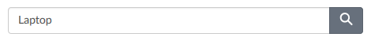
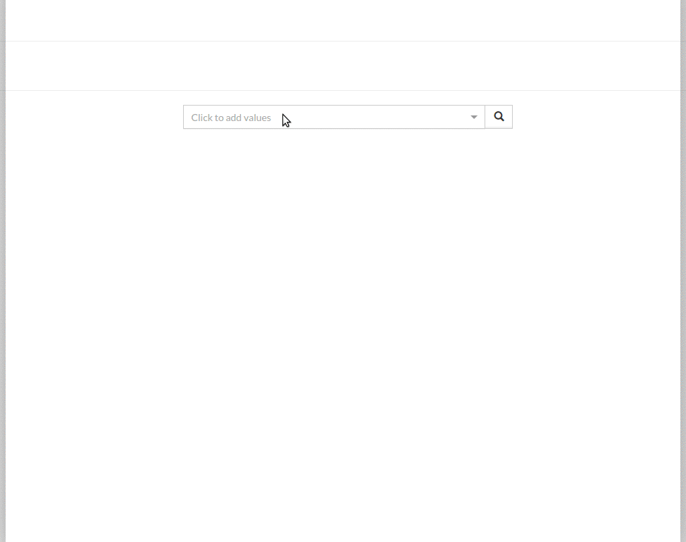
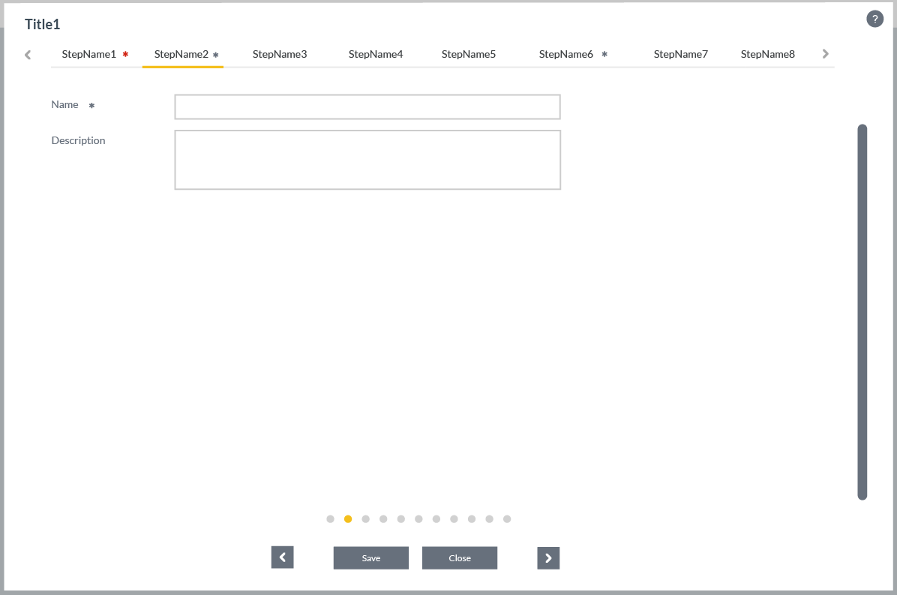

Components
UI Components
When designing and implementing user interface, try to be consistent in your choice of UI components. Users are familiar with UI components acting in a consistent way, so choosing common ones always when appropriate will help users with task completion and make also the implementation straightforward.
Checklist
Before implementing a new component go through following checklist:
- Is there an existing common component?
- If comparable component is found then check if it could be extended?
- Is there an available open source component that is already used?
- Is there an available open source component that is not yet in use?
- Can the component with given features be combosed from above?
If none of the above criteria is met then implement a new component. Add the component to the common component library if it can be used elsewhere as well.
Notes
- React Components
- Each html could be considered as a React component, but there is no so much sense to create React components for such things like Button, Label, etc. that renders plain html using predefined css classes (described in the guideline).
Example: React-Bootstrap implements some bootstrap component that require JS like Modal, Tabs, Popover etc. while it also contains such components like Button, Label, Form, Table that create almost 0 value by outputting single html tag with predefined class(es).
Example: One benefit of using e.g. a Button from a library like react-bootstrap is when updating Bootstrap from version 3 to 4 having changes to classes. Properties for the Button component would remain the same and it would use different CSS classes internally and hence in an ideal situation there would be no changes required for the using application.
Decision: Simple components from other libraries are not wrapped inside own custom components, e.g. react-bootstrap Button - keep it simple. Components that require: considerable boilerplate or code that repeats are wrapped inside own components - do not repeat yourself. An example of a component that has both is grid that is wrapped inside a custom component that provides own API, properties and abstracts functionality e.g. reordering and sorting of columns.
- Complex Components
- Instead of having highly customizable/complex component it would better to break it into multiple simple components even if you are repeating code. One "bad" example of such "fat" component is react-select that has ~70 input properties(parameters) and 626 open issues (for single component!!!)
- Component(s) modules
- As soon as it becomes clear that some component (or group of components that are related to each other logically) inside the product/project could be put in use for wider auditory it could be extracted into separate/individual module/repository.
Common
Shared components implemented in-house: oc-common-ui
Alerts
Component for showing notifications to the end user.
Card
Card is a simple content container.
Note
- Bootstrap 4
- Card is a new component in Boostrap 4 and it will affect current implementation somehow.
Datagrid
Currently using FixedDataTable with common wrapper. Wrapper provides e.g. sorting, reordering etc. This is usually in cases where simple read-only visualization is not enough and e.g. inline editing is needed.
Document other used datagrids and use cases here as well.
Dates
React date(range) inputs/pickers: react-dates
Layouts
Application
Application layout component is the main layout of the application.
Searchbar
Searchbar is a component that contains an input element and a button for invoking the search.
Same component is used throughout the applications in order to have a consistent look and feel.
Component is stateless and takes value and callback for button click as properties.
Rich editors
Rich-editor-like components. Based on Draft.js framework for building rich text editors. Provides possibility to write formatted text and output it as plain text or html.
Reference search
React component to select reference(s) of exiting domain objects on the form. Each object could be selected (usually) using auto complete (like full text search) or modal dialog. That provides possibility to perform search using specific object fields/properties. It supports multiselection, sorting and filtering.
Common reference search:
Notes
- Common Component
-
This could be implemented as a common component where the content of the modal is domain specific provided by the consumer? Similar functionality is needed in multiple applications.
Internationalization ( i18n )
Utility components for working in pair with opuscapita-i18n
Overlapping functionality with react-intl
Overlays
Modals, utility components for dynamic elements positioning, etc.
SVG utilities
Components to work with SVG
Wizard
Wizard is used to divide a task into smaller and simpler steps. Wizard can be used multiple different use cases.
3rd party
Open source components.
Accordion
For collapsible elements use accordion from react-bootstrap.
Autocomplete
React-Select
Charting
For charting e.g. line, pie, bar etc. use Recharts
Usually charting is used with grid layouting to implement reporting solutions.
Color picker
For color picker use React Color. This is used for example customer customization purposes.
Day picker
See also react-dates.
Grid layouting
For configurable grid layouting use React-Grid-Layout. This is different than Bootstrap column layout and useful e.g. for dashboard implementations.
Scrollbar
For replacing browser specific scrollbar use React Perfect Scrollbar.
This has issues with container that has changing content size.
Tree
#NEEDED
Tree is needed in various applications.